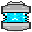
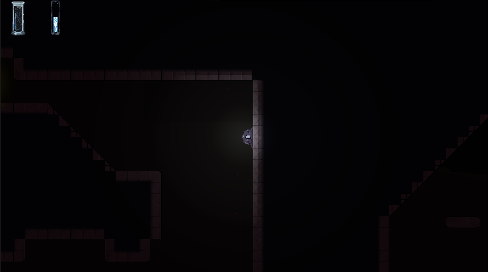
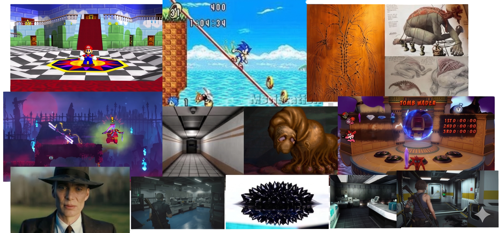
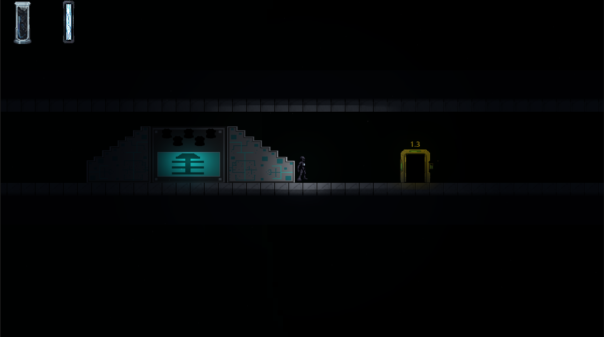
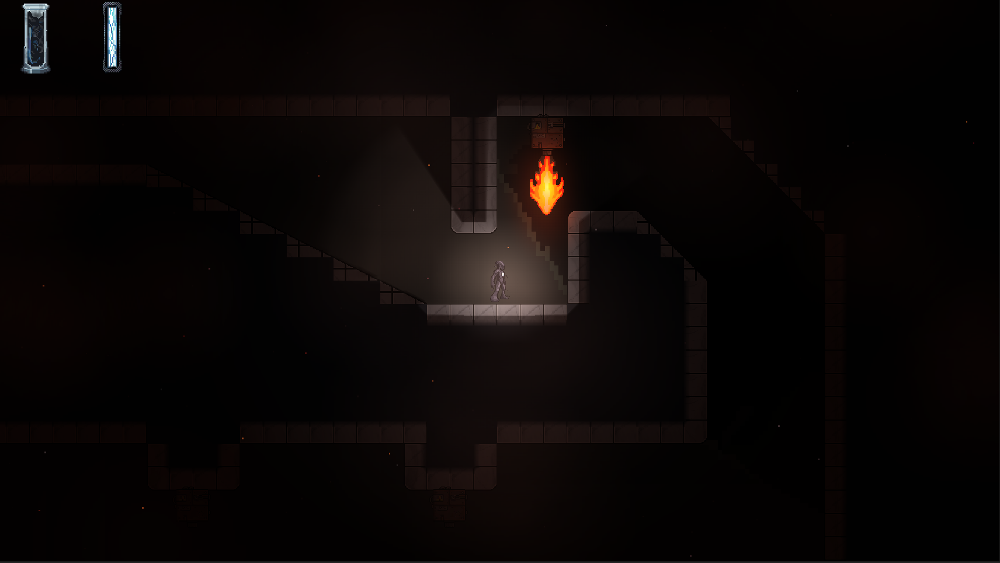
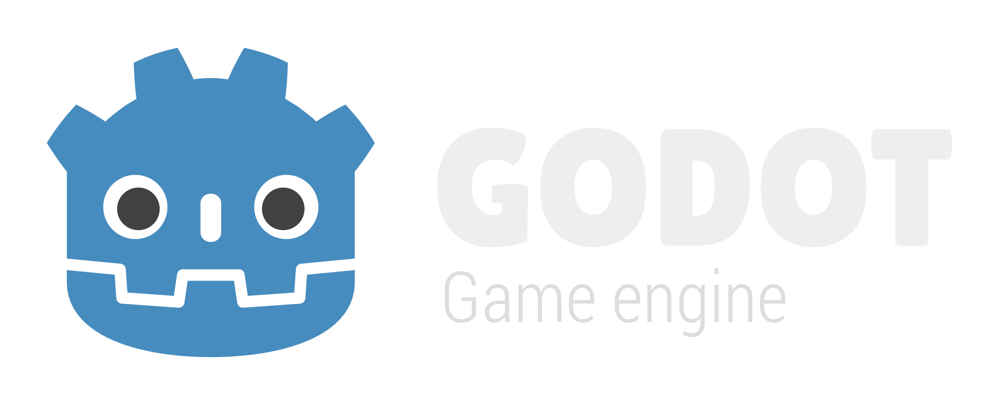

REPRESENTANTES DE MINTIOS
Albrecht Sasha
GAME DESIGNER
MINTIOS
ESTUDIO INDEPENDIENTE DE VIDEOJUEGOS
-
◈
Sede: Córdoba, Argentina.
-
◈
Origen: Nacido por alumnos del Colegio Universitario IES 21.
-
◈
Equipo Multidisciplinario (6 integrantes):Game Design: Sasha Albrecht · Iñaki Guerrero B. Programación: Gabriel Dutto Arte: Luka Manuel Milani · Ignacio Aguirre · Facundo Marinelli Sonido y Música: Facundo Marinelli
FERRO
PULSE
PLATAFORMAS 2D DE PRECISIÓN, INERCIA Y CONTROL DEL MOMENTUM
01
Precision
02
Sci-Fi Industrial
03
Shapeshifting
Inspirado en:
Super Mario Bros.
Sonic Advance
Super Meat Boy
SUJETO // FE-26
ESTADO: DESPIERTO · INTEGRIDAD ESTABLE
CONTEXTO NARRATIVO
EL DESPERTAR DE FE26
01
Experimento Despierto
Tomás el lugar de Fe26, una entidad experimental que despierta sin su forma humana original.
02
Escape hacia la Libertad
Atrapado en un complejo científico abandonado, deberá abrirse paso piso a piso para escapar.
03
Ecos de la Guerra
Descubrir qué sucedió con las guerras que asolaban su mundo y el origen del proyecto.
04
El Misterio del Laboratorio Muerto
Desentrañar qué ocurrió con él y qué dejó a todas las instalaciones en ese estado devastado.
SISTEMA DE CAMBIO DE FORMA EN TIEMPO REAL
3 ESTADOS DE LA MATERIA
SÓLIDO
LÍQUIDO
ELÉCTRICO
FORMA 01 // BASE
Control
Doble Salto
Ataque
ESTADO SÓLIDO
Tracción estable y precisión clásica de plataformas.
- ▸Mayor control: Físicas firmes ideales para saltos simples de alta precisión.
- ▸Doble Salto: Corrección aérea y alcance vertical seguro.
- ▸Ataque contundente: Permite romper paredes frágiles o paralizar temporalmente a los enemigos.
FORMA 02 // FLUIDEZ
CONSERVACIÓN DE INERCIA Y MOMENTUM
ESTADO LÍQUIDO
Adaptabilidad morfológica e infiltración por el entorno.
- ▸Espacios pequeños: Compresión corporal para avanzar por conductos bajos.
- ▸A través de rendijas: Filtración instantánea por rejillas y pisos permeables del laboratorio.
- ▸Adhesión a paredes: Capacidad de pegarse a superficies verticales y conservar momentum en saltos largos.
FORMA 03 // ENERGÍA
ALTA MOVILIDAD AÉREA Y CONDUCCIÓN
ESTADO ELÉCTRICO
Descarga cinética e interacción con los sistemas del laboratorio.
- ▸Levitación temporal: Suspensión magnética para sortear fosos y peligros.
- ▸Dash de alta velocidad: Impulso direccional instantáneo en tierra o aire.
- ▸Activación de circuitos: Energiza baterías, puertas, cables movilizadores e interruptores.
DIRECCIÓN DE ARTE & AMBIENTACIÓN · LUKA MANUEL MILANI
ESTILO PIXEL ART, REFERENCIAS Y ATMÓSFERA
ESCALAS Y PALETA
REFERENCIAS
ATMÓSFERA Y VFX
PERSONAJES Y ENEMIGOS (64×64)
Fe26 y criaturas del laboratorio
BLOQUES Y OBJETOS (32×32)

Baterías, losas y módulos
PALETA CROMÁTICA: GRISES Y TONOS OPACOS
Ambientación desconocida y abandonada
#141C28
#2F3641
#565B63
#7F8389
#9A9EA4
#37604F
#5FF2E0

REF // 01
SCP: CONTAINMENT BREACH
Laboratorio abandonado y laberinto de salas: Base para la estructura claustrofóbica de pasillos e instalaciones científicas fuera de control.
REF // 02
ESCAPE THE BACKROOMS
Falta de orientación e inquietud constante: Espacios liminales que transmiten la tensión de no saber qué acecha en la siguiente sala.
REF // 03
LITTLE NIGHTMARES
Baja iluminación y complejidad de puzzles: Uso de sombras profundas, contraste focalizado y diseño espacial de acertijos en el nivel.

Moodboard de Referencias Visuales
Aplicación en Sala del Laboratorio (FerroPulse)
Experiencia Sensorial e Inmersión
Transmitir que hay algo más junto con el jugador en la oscuridad del laboratorio:
-
01
Sensación de Desorientación: Avance tenso a través de sectores desconocidos del complejo.
-
02
Baja Iluminación Dinámica: Oscuridad envolvente que limita el campo visual y destaca los pulsos de energía.
-
03
Música, Sonidos y VFX Aplicados: Partículas de polvo abandonado, chispas eléctricas, niebla y diseño sonoro opresivo.

GODOT ENGINE 4.6
LICENCIA MIT
GDSCRIPT PROPIO
INGENIERÍA & ARQUITECTURA TÉCNICA
MOTOR GRAFICO ELEGIDO
-
01
Gratuito, Libre y Open Source (Nacido en Argentina): Motor de código abierto con proyección global y raíces locales.
-
02
Especializado en 2D Nativo: Pipeline dedicado de píxeles reales, físicas de inercia propias, máquinas de estado y shaders personalizados.
-
03
0% Regalías ni Licencias: Sin costos ocultos ni bloqueos de proveedor (vendor lock-in).
-
04
100% Propiedad Intelectual del Equipo: Mintios preserva la titularidad y control total sobre el código fuente y la IP de FerroPulse.
-
05
Comunidad Amplia y Documentación Sólida: Ecosistema activo y recursos técnicos que aceleraron la resolución de problemas críticos.
ESTRATEGIA COMERCIAL // BLOQUE 01
PÚBLICO OBJETIVO
14+
Rango Etario
Jugadores desde los 14 años hasta adultos jóvenes que buscan retos mecánicos reales y una atmósfera atrapante.
2D
ADN de Plataformas Clásicos
Jugadores que ya tuvieron contacto con referentes como Super Mario Bros. y Sonic, familiarizados con la precisión y el momentum.
SKILL
Easy to Learn, Hard to Master
Accesible desde el estado sólido inicial, con un techo de habilidad profundo al encadenar inercia líquida y movilidad eléctrica.
● DISPONIBLE AHORA EN ITCH.IO
DEMO JUGABLE PARA PC
Probá hoy mismo el vertical slice oficial de FerroPulse de forma gratuita.
2 / 4
Pisos del Laboratorio (Tutorial + Piso 1 completo)
15 – 40 min
Duración estimada de juego
Windows PC
Descarga ligera (51 MB)
ESCANEAR PARA JUGAR LA DEMO
https://31perseus.itch.io/ferropulse
HOJA DE RUTA & EXPANSIÓN
PLANES A FUTURO
ACTUALIDAD
Demo Pública & Ronda con Publishers
Pisos 0 y 1 completados. Búsqueda de financiamiento y feedback editorial para completar los Pisos 3 y 4, Jefe del Piso 2 y cinemáticas de lore.
FINALES SEPT / MEDIADOS OCT 2027
Lanzamiento Versión Final en PC (Steam)
Juego completo con los 4 pisos del laboratorio, jefes finales y narrativa ambiental íntegra (2 a 4 horas de duración principal).
FASE POST-LANZAMIENTO
Ports a Consolas & Localización
Expansión del alcance comercial mediante adaptación a consolas y traducción a múltiples idiomas.
TRANSMISIÓN AUDIOVISUAL
TRÁILER OFICIAL
FERRO
PULSE
¡GRACIAS POR SU ATENCIÓN!
¿PREGUNTAS O FEEDBACK? ESTAMOS A DISPOSICIÓN
CORREO OFICIAL
mintiosgames@gmail.com
DEMO EN ITCH.IO — ESCANEAR QR